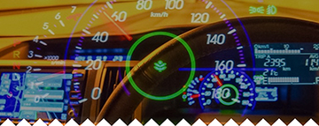

    <ons-page id="first-page">
      <!-- 看板画像 -->
     
       <div class="waku">
          <h2 class="checker_title">首振り</h2>
          <h3 class="result_title" class="result_title">首ふり（よこ方向：角度）</h3>
          <h4 id="swing_lat_dtl_dir" class="result_title">ー</h4>
          <h3 class="result_title" class="result_title">首ふり（よこ方向：回数）</h3>
          <h4 id="swing_lat_dtl_cnt" class="result_title">ー</h4>
          <hr>
          <h3 class="result_title" class="result_title">首ふり（たて方向：角度）</h3>
          <h4 id="swing_long_dtl_dir" class="result_title">ー</h4>
          <h3 class="result_title" class="result_title">首ふり（たて方向：回数）</h3>
          <h4 id="swing_long_dtl_cnt" class="result_title">ー</h4>

          <span id="swing-long-result" class="result_description"></span>
        </div>

        <div  id="jins-run-test2" class="waku">
          <h2 class="checker_title">目</h2>
          <h3 class="result_title" class="result_title">まばたき</h3>
          <ons-icon id="icon-eye" icon="eye" size="200px"></ons-icon>
           <h3 class="result_title" class="result_title">まばたきの速さ</h3>
          <h4 id="blinkSpeed_value" class="result_title">ー</h4>
          <h3 class="result_title" class="result_title">まばたき強さ</h3>
          <h4 id="blinkStrength_value" class="result_title">ー</h4>
          <hr />         

          <h3 class="result_title" class="result_title">視線移動（よこ方向：角度）</h3>
          <h4 id="em_lat_dtl_dir" class="result_title">ー</h4>
          <h3 class="result_title" class="result_title">視線移動（よこ方向：回数）</h3>
          <h4 id="em_lat_dtl_cnt" class="result_title">ー</h4>
          <hr />
          <h3 class="result_title" class="result_title">視線移動（たて方向：角度）</h3>
          <h4 id="em_long_dtl_dir" class="result_title">ー</h4>
          <h3 class="result_title" class="result_title">視線移動（たて方向：回数）</h3>
          <h4 id="em_long_dtl_cnt" class="result_title">ー</h4>
        </div>
        <div class="waku">
          <h2 class="checker_title">居眠り検出</h2>
          <h3 id="sleeping-eye" class="result_title">ーー</h3>
          <h4 id="sleeping_result_msg" class="result_title">ー</h4>
          <!--<span id="sleeping-eye-result" class="result_description">説明が入ります。</span>-->

          <span class="space_h30"></span>
          <h3 id="sleeping_msg" class="result_title">ーー</h3>
          <h4 id="sleeping_result_msg" class="result_title">ー</h4>
        </div>
        <div class="waku">
          <h2 class="checker_title">運転姿勢判定</h2>
          <ons-icon id="icon-body" icon="male" size="200px"></ons-icon>
          <h3 id="tilt_msg" class="result_title">前傾角度(Tilt)</h3>
          <h4 id="tilt_result_msg" class="result_title">ー</h4>

          <span class="space_h30"></span>
          <h2 class="checker_title">姿勢左右</h2>
          <h3 id="yaw_msg" class="result_title">左右角度(Sequential)</h3>
          <h4 id="yaw_seq_msg" class="result_title">ー</h4>


        </div>

    </ons-page>
